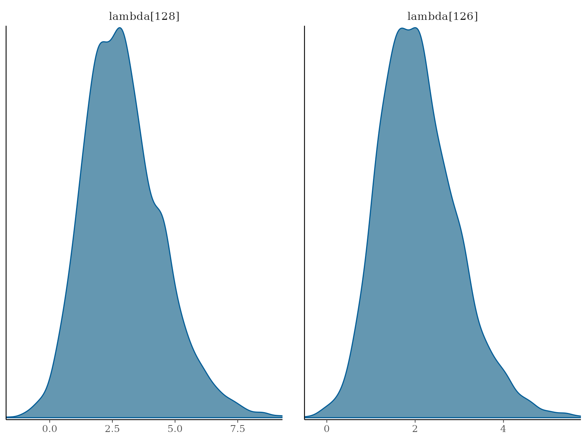

Item and comparison-specific effects in Bradley-Terry models
Source:vignettes/playerComparisonModel.Rmd
playerComparisonModel.RmdBradley-Terry model with item and comparison specific effects
In some studies, there are covariates associated with each item or comparison. We model the probability that item \(i\) beat item \(j\) in comparison \(k\) through
\[\text{logit}(\pi_{ijk}) = (x_i - x_j)^T\beta + \kappa a_k.\]
To account for item specific effects, item \(i\) is associated with a set of \(P\) explanatory variables \(x_i = (x_{i1}, \ldots, x_{iP})\), which are combined with the parameter vector \(\beta = (\beta_1, \ldots, \beta_P)\) through a linear predictor to give the quality of item \(i\), \(\lambda_i = x_i^T\beta\). Examples of this include spatial studies, where you might have demographic information for each area, or for sports data, where each item might have covariates describing their charecteristics.
The variable \(a_k \in \mathbb{R}\) describes the comparison specific effect for comparison \(k\). One common comparison specific effect is a home/away effect, for example in football leagues where the home team has an advantage. To allow for a home/away effect, we let \(a_k = 1\) if item \(i\) has the advantage in comparison \(k\), \(a_k = -1\) if item \(j\) has the advantage, and \(a_k = 0\) if neither item has an advantage.
As this model allows for comparison specific effects, we write the likelihood as a product of contributions from each of the \(K\) comparisons:
\[ \pi(\boldsymbol{y} \mid \boldsymbol{\beta}, \kappa y, a_1, \ldots, a_K) = \prod_{k=1}^K \pi_{ijk}^{y_{ijk}} (1 - \pi_{ijk})^{1 - y_{ijk}}. \]
The prior distributions for this model are similar to the standard model. For the item covariates, we use a multivariate normal prior distribution. The relationship between the item covariates can be described through the covariance matrix \(\Sigma\), which could be the identify matrix if prior covariance is not assumed. The diagonal of this matrix is set to \(\alpha^2\), which can be learned, and has an inverse-Gamma prior distribution. The comparison specific effect \(\kappa\), has a normal prior distribution with variance \(\tau^2\). The default value for \(\tau\) is 5. The prior distributions are given by:
\[\begin{align} \beta &\sim \text{MVN}(\mu, \alpha^2\Sigma) \\ \alpha^2 &\sim \text{inv-}\Gamma(\chi, \psi) \\ \kappa &\sim N(0, \tau^2) \\ \end{align}\]
2019 Wimbledon Championship
We demonstrate the speedyBBT package on data from the
2019 Wimbledon Men’s Singles Championship. This consists of 128 players
(or items) playing 127 matches. We include two covariates for each
player, their rank in the ATP league table and the number of points
received so far in the ATP 2019 tour prior to Wimbledon starting. The
quality parameter for player \(i\) is
modelled by \[\lambda_i = \beta_1x_{rank,i} +
\beta_2x_{points,i}\] We include a comparison specific effect by
setting \[a_k = \begin{cases}
0 & \text{if match } k \text{ took place in week 1} \\
1 & \text{if match } k \text{ took place in week 2}
\end{cases}\]
This is to allow for player fatigue and wear of the grass courts between weeks. You fit the model by calling
data(wimbledon, package = "speedyBBT")
# Fit BT model with covariates and comparison-specific effect
wimbledonModel <- BBTm(
outcome = wimbledon$matches$outcome,
item1 = wimbledon$matches$winner,
item2 = wimbledon$matches$loser,
advantage = wimbledon$matches$secondWeek,
formula = ~ rank + points,
data = wimbledon$players,
n.iter = 4000,
burn.in = 100,
verbose = FALSE
)You can get the posterior means for \(\beta_1, \beta_2\) and \(\kappa\) by using the following commands:
wimbledonModelCovariateMeans <- colMeans(parameter(wimbledonModel, "beta"))
wimbledonModelCovariateMeans
#> beta[1] beta[2]
#> -0.0102147339 0.0001890522
wimbledonModelComparisonMeans <- mean(parameter(wimbledonModel, "kappa"))
wimbledonModelComparisonMeans
#> [1] 6.072481The posterior mean for the effect of a match being in the second week is around 6. You can also use the MCMC samples to investigate functions of the posterior distirbution. For example, you can compute the probability Djokovic beat Nadal by running
djokovic <- which(wimbledon$players == "Djokovic N")
nadal <- which(wimbledon$players == "Nadal R")
mean(parameter(wimbledonModel, "lambda", djokovic))> mean(parameter(wimbledonModel,"lambda", nadal))
#> [1] TRUEYou can run some MCMC diagnostics to check convergence. The
BBTm() function returns an “mcmc” object that
can be used with the coda package for diagnostics. You can
use the effectiveSize() function to calculate the estimated
effective sample size for convergence. Another example diagnostic
illustrated here is the Geweke diagnostic, calculated using the
geweke.diag() function from coda. For more
information about available plots and diagnostics, you can refer to the
coda
package documentation.
effectiveSize(parameter(wimbledonModel, "beta"))
#> beta[1] beta[2]
#> 1289.4366 727.5981
geweke.diag(parameter(wimbledonModel, "beta"))
#>
#> Fraction in 1st window = 0.1
#> Fraction in 2nd window = 0.5
#>
#> beta[1] beta[2]
#> -0.14157 -0.01563You can also investigate the model outputs visually using the
plot function in coda or
bayesplot. This example shows the estimated abilities of
playes 10, 20, 30, and 40 from the mcmc_dens() function to
create density plots of the MCMC samples. For more information, see the
bayesplot
package documentation.
if (requireNamespace("bayesplot", quietly = TRUE)) {
# Install bayesplot if not already installed
# install.packages("bayesplot")
# install.packages("ggplot2")
library(bayesplot)
library(ggplot2)
# Trace plots
bayesplot::mcmc_intervals(wimbledonModel, pars = c(paste0("lambda[", djokovic, "]"), paste0("lambda[", nadal, "]"))) +
ggtitle("Posterior distributions with 95% credible intervals") +
ylab(expression(lambda[i])) +
xlab("Density")
# Density plots
bayesplot::mcmc_dens(wimbledonModel, pars = c(paste0("lambda[", djokovic, "]"), paste0("lambda[", nadal, "]")))
} else {
# Trace plots
plot(
wimbledonModel[, paste0("lambda[", c(djokovic, nadal), "]")],
main = "Trace plots for Djokovic and Nadal"
)
}